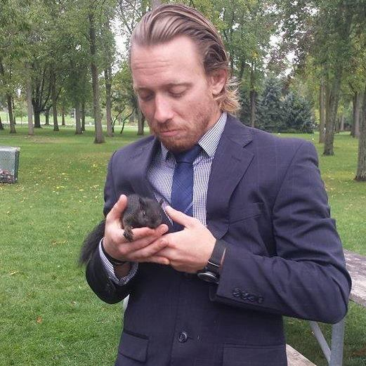
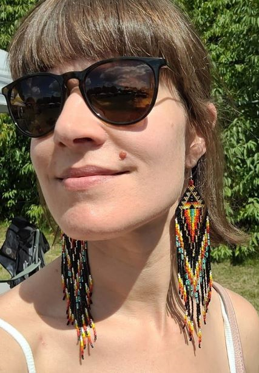

Team Bios
Ashley Allan
We welcomed Ms. Allan to the team fresh off a world tour with her band, The Golden Map. She's a rockstar with a heart for all things
geospatial. Ashley studied at the prestigious College of Maps and Directions in Komodo, Indonesia. She specializes in geospatial analyses
with a rock and roll flare. Her passion is helping people feel the music in mapping. When Ashley isn't headlining a rock and roll tour, she
likes to give back to the community by working at her local soup kitchen. Can this rocker with a heart of gold solve your GIS needs?
She would like to try!
Adrian Koornneef
Adrian Koornneef is pictured here with his pet grey squirrel, Tofu. Adrian's foray into cartography began while working as a high-rise
window washer. He found himself peering at the world around him, from his oft high perch and wondering about spatial connections. He was
eventually fired from the job for drawing maps on customers windows. This triggered a fresh start for the young entrepreneur. He went back to
school and earned a certificate in GIS. Together with the other 3 members at the top of the class, he started Map Maven, and the rest,
as they say, is history.

Khazana Ahmadli
Khazana Ahmadli is our star map maker, cartographer-extraordinaire. The story of how she came to be at the top of her field is very
interesting. So much so, that it's almost unbelievable. Khazana got her start in GIS as a child. She would draw maps in the sandbox
while the other babies were playing with trucks. She progressed quickly to intricate special purpose maps created on Avenza, which was
a very surprising thing for a baby to do. When she met Mr. Koornneef and the rest of the crew while earning a certificate in GIS, she
knew her future in Map Maven would be blindingly bright.
Janet Pratt
Janet is a mother of three and is more of a 'bossy pants' around the office than an actual tech. Her roles basically roll back to drinking
coffee and complaining about the temperature in the office. Don't be fooled, she exceled in her certification program but the whole experience
left her exhausted and jaded. More of a shell of a technician than anything.
